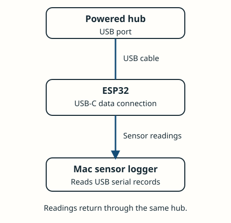
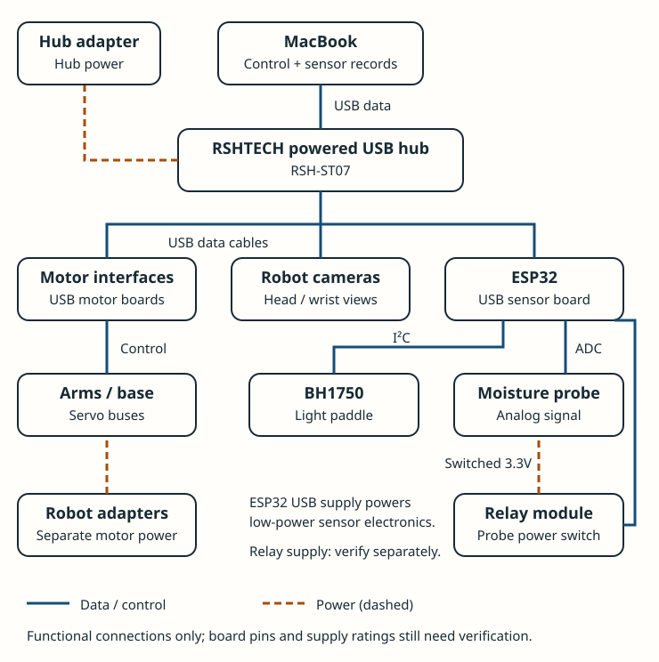
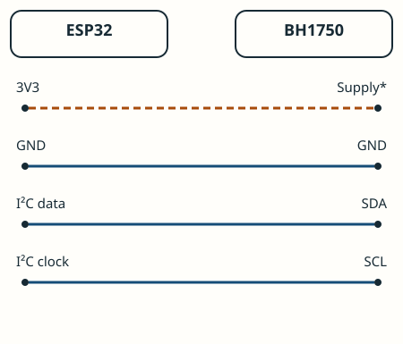
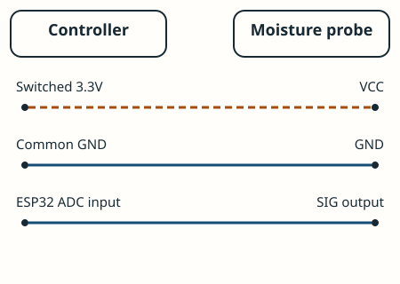
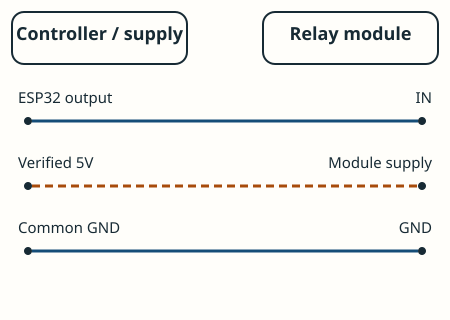
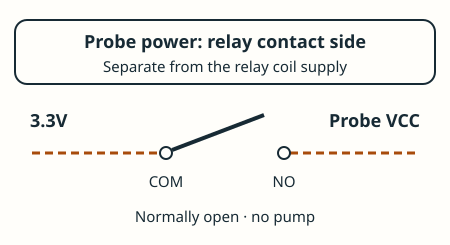

ESP32: the sensor translator

One board reads sensors; the three-pack gives spares. The robot’s motor boards do not replace it. Develop and test the serial protocol on the bench before attaching anything to a moving arm.
FIELD GUIDE / HARDWARE & WIRING
The first build keeps the robot parked and uses its existing cameras. Sensors attach through an ESP32; USB does not power the robot’s motors.

The project selected the WowRobo XLeRobot Combo. Recorded kit contents include motor interfaces, three cameras, robot cables and two 12V adapters; verify the delivered boxes and labels. Hub and Anker C300 DC were confirmed bought. The laptop is the current computer plan; no extra Pi is required just to run the sensor logger. Actual macOS drivers, camera bandwidth and robot-software compatibility still need a bench check.

One board reads sensors; the three-pack gives spares. The robot’s motor boards do not replace it. Develop and test the serial protocol on the bench before attaching anything to a moving arm.

*Confirm the breakout’s pin labels/supply requirements. Use a 3.3V-compatible bus. Route a flexible four-wire cable to one removable paddle. Test errors through the complete arm motion; long I²C wiring is not automatically reliable.

The SparkFun SEN-13637 measures conductivity, affected by contact and dissolved salts. It is a local wetness proxy, not a reservoir level meter. Keep signal within the ESP32 input range; never feed 5V into its ADC.


Use one relay channel; no pump is switched. Verify the delivered module’s trigger configuration, supply current and boot-off behavior. Contact side switches 3.3V; relay coil supply is separate. Final GPIOs and power pin selection wait for board pinout verification.
These are functional wiring diagrams, not an approved pin-by-pin harness. Read the board labels and SparkFun hookup guide; check voltage/continuity before plugging the sensor harness into the computer.
| Part | Soldering task | What connects afterward |
|---|---|---|
| ESP32 / BH1750 / optional SHT31 | If headers arrive loose, solder the header pins into the board’s plated holes. Already fitted headers need none. | Jumper plugs for bench tests; retained connectors for final build. |
| Perfboard + terminal kit | Solder headers and screw-terminal pins to perfboard, plus planned interconnects. | Strip wire ends and clamp under terminal screws. |
| Screw-terminal moisture probe | No solder at the probe terminal if the block arrives fitted. | Three wire ends into VCC/GND/SIG. |
| Moving wire splices | Only if extending/joining wires that way. | Insulate exposed joints with heat-shrink or use suitable enclosed connectors. |
| USB cables, robot kit leads, bottle, planters | No added soldering for their ordinary connections. | Plug-in or mechanical assembly. |
Calibration means recording what your installed probe reads on the actual paper with known dry, damp and wet examples. Repeat placements, save the raw range and define valid/ambiguous readings. Do not invent a universal percentage or label voltage as volumetric soil moisture.
Contact testing means proving the probe really touches the intended patch consistently without hitting the plastic or crushing the crop. Include “hovering/not touching” trials: they must be INVALID, not interpreted as dry. A compliant printed holder/depth stop helps; software cannot correct a probe that misses the paper.
For light, extend the paddle to canopy height, face upward, avoid shadows, stop moving and collect fresh conversions. Start with roughly ten readings over two seconds at default timing, logging median/spread and pose. Reject stale/saturated/bus-error samples. Repeated readings improve repeatability, not absolute calibration; lux is not PPFD. ROHM datasheet.
Start from the robot’s supplied wall adapters; check that the actual labels accept Japan’s 100V mains. The owned 288Wh C300 DC is not an already completed motor-power solution: its connector, voltage/current capacity and protection path must match the robot. Do not assume USB-C alone supplies fixed 12V motor power.
A fixed overview camera would need its own mount and cable path back to a computer; a mobile robot cannot remain tethered to a fixed camera indefinitely. Our initial choice avoids that extra camera: use the existing head/wrist views and validate that they cover the watering area. No Raspberry Pi, depth camera, scale or pump purchase is justified by this diagram.